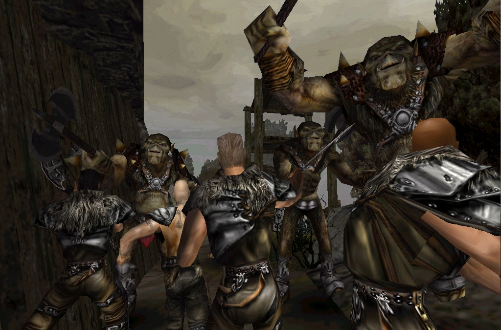
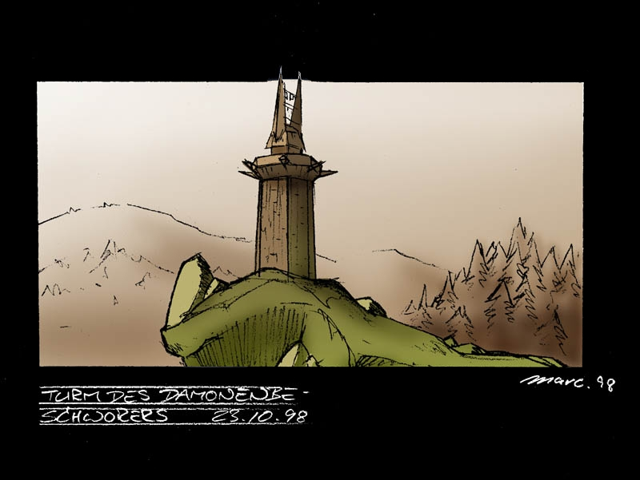
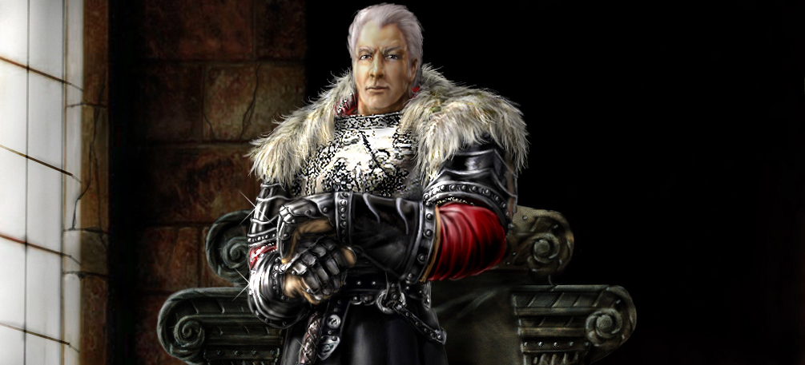
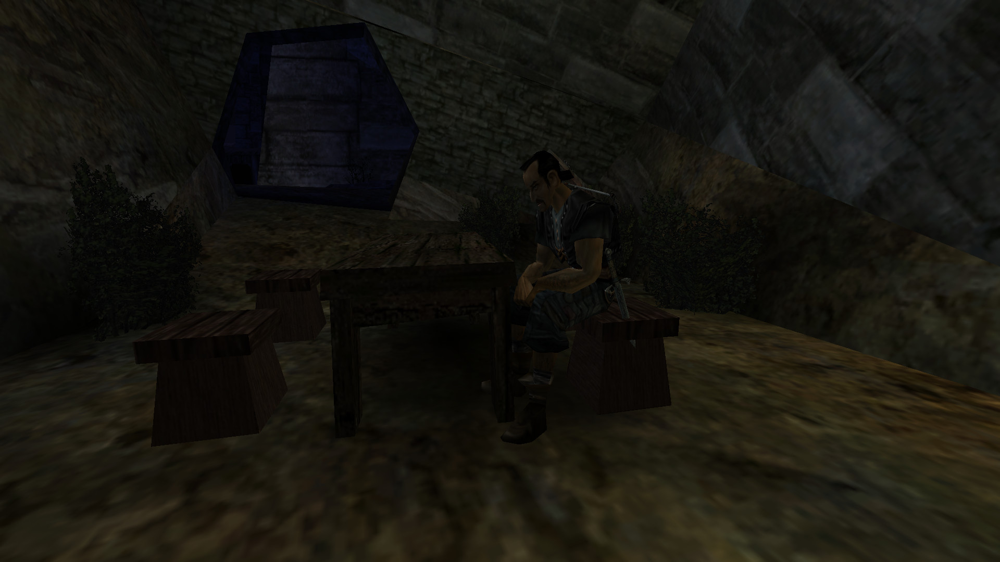
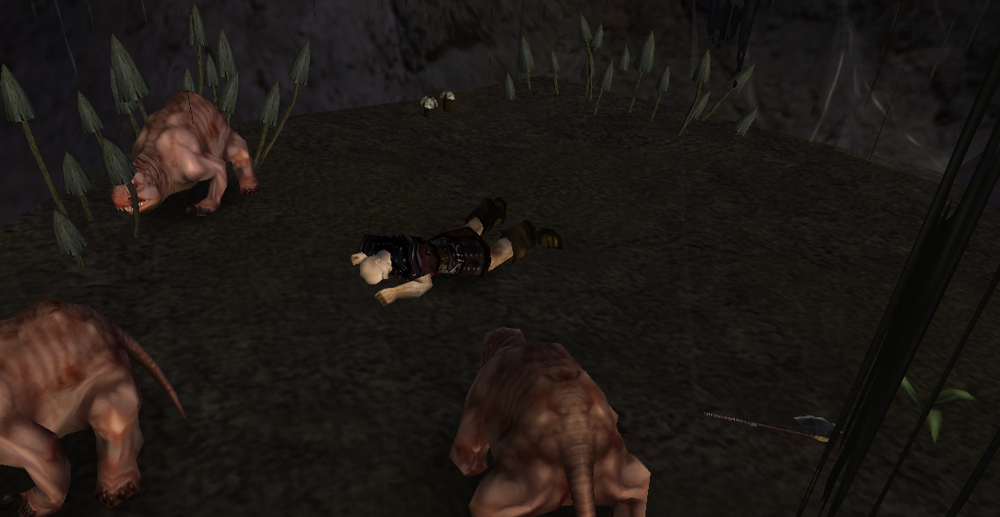
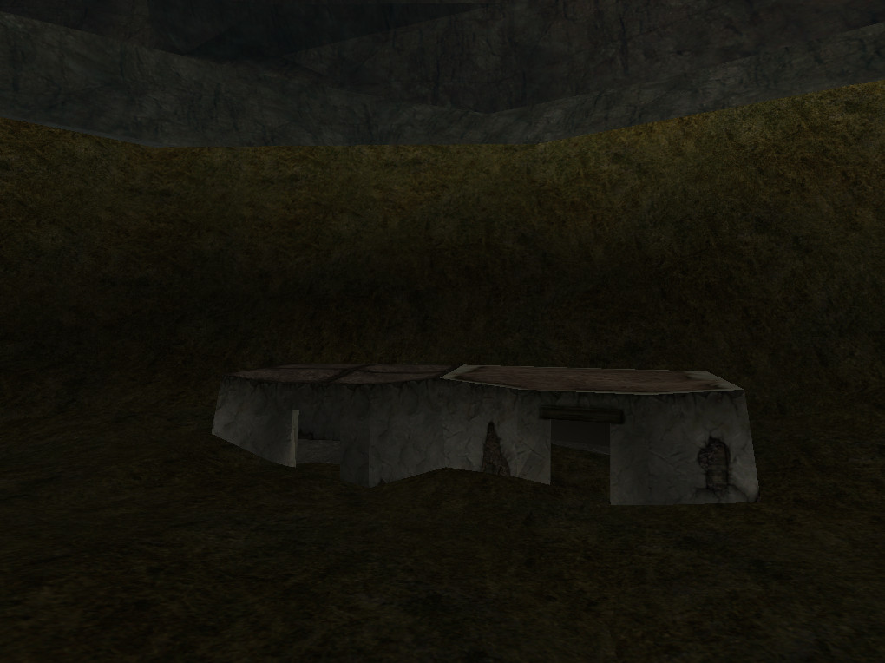
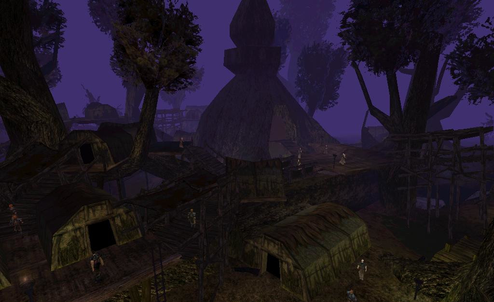

../ Ein Interview mit Mike Hoge
zum 20. Jubiläum von GOTHIC - Part 2/3
von Phoenix Tales
Ein paar Worte zu diesem "Interview" - das keines war. :)
Ich war davon ausgegangen, dass Florian unser Gespräch aufzeichnet, damit keine Informationen verloren gehen. Florian hatte mir wohl gesagt, dass er die Aufzeichnungen als Interview veröffentlichen wolle, aber ich war von bisherigen Interviews nicht gewohnt, dass man aber auch wirklich jeden Satz wortwörtlich zitiert, inklusive teilweise gruseliger Grammatik und ner Menge Kraftausdrücke, die mir beim freien Reden so rausrutschen.
Ich war ein bisschen baff als ich das "Interview" zum ersten Mal las und merkte, wie schlecht ich mich ausdrücke wenn ich einfach so daherquatsche, aber Florian meinte, es wäre lustig, den Text in dieser Form zu veröffentlichen. Also gibt es nun die (fast) ungefilterte "Mike redet frei Schnauze" Version anlässlich des 20. Jahrestags und (hoffentlich) zu eurer Belustigung!
Außerdem will ich diese Gelegenheit nutzen noch einmal der Community zu danken.
Für die vielen Male, an denen in den letzten Jahren Menschen auf mich zugekommen sind und mir erzählt haben, wie viel Spaß sie mit unseren Spielen hatten.
Für das Engagement die Spiele zu modden, kritisch auseinanderzunehmen, die Lore akribisch nachzuvollziehen und sonst alles, was rund um die Spiele passiert ist.
Und natürlich dafür, die Spiele gespielt zu haben!
Danke!
Mike
Hier geht es zum ersten Teil des Interviews.
Index Part 2
- OrcAssault: Der Überfall der Orks
- Die Inventarbegrenzung
- Nemesis: Der Wahnsinn und die alte Story
- Ein paar Worte über Phoenix
- Assassin und die Gildenplots
- Der Dämonenturm
- Der graue Baron
- Die geheime Gilde der Meister
- Quentins Banditenlager
- Waren Zwerge Teil der Lore?
- Was ist mit Nek passiert?
- Die versunkenen Hütten im See
- Der Tempelbaum
OrcAssault: Der Überfall der Orks
Florian: Okay, die nächste Frage bezieht sich auf die zwei letzten Events. OrcAssault und Nemesis. Und zwar hätten die Orks ja die Orkstadt verlassen sollen, wahrscheinlich nachdem der Held den Schläfertempel öffnet und dann hätten sie irgendein Lager überfallen sollen [laut Tom Putzki]. Weißt du noch welches das war? Das Alte Lager? Ähnlich wie in Gothic 2 später wieder?
Mike: [überlegt] Ich bin mir nicht mehr ganz sicher. Ob das vielleicht so war, dass... [überlegt]
Florian: Oder war es vielleicht die Freie Mine? Dass die von unten...
Mike: Ja ich dachte auch.. Mein erster Impuls war jetzt die Freie Mine. Es war auf jedenfall die Idee dahinter: Wir haben ein Problem mit der Progression gesehen. Und dass das irgendwann langweilig ist gegen Molerats und Scavenger zu kämpfen. Und deswegen wollten wir die Monster austauschen, aber das natürlich nicht einfach so machen, sondern im Sinne der lebendigen Welt, in irgendeinem Prozess, irgendeinem Event. Und dann kamen natürlich die Orks in den Sinn. Die Orks sollten irgendwie an die Oberwelt kommen und zu Gegnern werden. Da rührt diese Idee her, die aber auch nie wirklich ausgearbeitet wurde. Das sind alles so halb ausgegorene Ideen, die jetzt rumgeistern, wo Leute teilweise leider mehr rein interpretieren als da war.
Man hat natürlich eine grobe Vorstellung: So könnte man's machen. Da wurde vielleicht mal kurz darüber gesprochen eine halbe Stunde, man hat ein paar Stichpunkte irgendwohin gekritzelt. Und dann hat man's erstmal liegen lassen. Bis dann später irgendwann die eigentliche Entscheidung kam und man sich nochmal dran gesetzt hat. Also sehr viele Ideen, das wirst du auch sehen in diesen Ordnern, sind ein bisschen ausgearbeitet und dann später nochmal verworfen worden. Das ist aber auch normal in der Entwicklung, aus meiner Sicht. Wir haben immer gesagt: Wer nichts wegschmeißen kann ist in der Branche falsch.
Die Inventarbegrenzung
Florian: Ja, wir verwerfen auch ständig wieder Sachen und schreiben sie um. Aber wir haben halt den Vorteil, wir müssen es nicht für Geld machen, haben keinen Zeitdruck.
Ganz am Anfang habt ihr darüber gesprochen, wie sehr ihr diese Immersion durch Visualisierung vorantreiben wollt. Da versuchen wir anzusetzen und das noch weiter zu treiben. Also zum Beispiel soll nun wirklich weitestgehend alles am Charakter visualisiert werden. Wenn er z.B. ein Schwert aufhebt, dann hat er es zuerst in der Hand und dann steckt er es weg und das sieht man dann aber noch an seinem Körper, das verschwindet dann nicht.
Mike: Habt ihr dann das Inventar auch begrenzt? Kannst ja nicht 57 Schwerter equippen [schmunzelt].
Florian: Das ist auch begrenzt, ja genau. Da gibts auch noch Sachen in den Daten, dass das wohl ursprünglich mal hätte begrenzt sein sollen.
Mike: Ja genau. Und dann hab ich mir aber überlegt, aus eigener Spieleerfahrung...
Florian: Kann halt nervig sein.
Mike: Ja, also ich meine es ist letzten Endes eine künstliche Verlängerung von Spielzeit. Entweder du spielst so, dass dich das nicht interessiert. Du kommst halt mit wenig aus. Oder du bist geil auf die beste Rüstung und brauchst Kohle, dann rennst du bei so einem Spiel wie Skyrim halt zum zweiten Mal in denselben Dungeon.
Florian: Ja, das ist doof.
Mike: Aber muss man das wirklich haben? Ist das wirklich so wichtig? Dass man noch einmal zum Looten zurückrennt? Und deswegen die Überlegung: Ne, weg damit. Kann aber auch Sinn machen!
Florian: Das mag ich auch nicht! Aber.. ich weiß nicht, ob du STALKER gespielt hast?
Mike: Ja, STALKER 1 hab ich geliebt!
Florian: Da gibts ja auch ne Inventarbegrenzung. Aber da läufst du jetzt halt nicht rum und suchst nochmal nach dem Zeug, weil das halt durch das Balancing gut gelöst ist.
Mike: Ja, ja, das wollte ich nämlich gerade sagen: Die einzige Ausnahme, aus meiner Sicht als Gamedesigner, wo es Sinn macht mit Inventarbegrenzung zu arbeiten, sind Survival Games. Da macht es spielerisch absolut Sinn, da ist es nicht wegzudenken.
Florian: Ja, wir versuchen halt das Spiel so ein bisschen in diese Hardcore-Survival Richtung zu entwickeln.
Mike: Ja, nice!
Florian: In den ersten Interviews hast du auch immer gesagt, das Hauptziel sei erstmal zu überleben und dann auszubrechen. Und diesen Survival Aspekt versuchen wir davon inspiriert etwas mehr zu betonen.
Nemesis: Der Wahnsinn und die alte Story
Florian: Dann zu dem letzten Event: Nemesis. Das hätte im fünften Kapitel stattfinden sollen, ganz am Ende. Hat das [vereinfacht gesagt und um nicht zu viel zu spoilern] damit zu tun, dass am Ende alle wahnsinng werden? Das war meine Interpretation aus unseren Nachforschungen.
Mike: Ja, also der Einfluss des Schläfers wird immer größer.
Der Schläfer pennt da unten. Und da war so die Vorstellung, dass der damals mal von irgendwelchen Orkschamanen gerufen wurde. Aber das war total unspektakulär. Der hat sozusagen nur irgendwie seine Reise in diese Welt gemacht und war danach so erschöpft, dass er erstmal tausend Jahre pennen muss.
Florian: Also der hat nicht den Orks irgendwie geholfen, in irgendeinem Krieg oder so?
Mike: Weiß man nicht mehr. Der liegt da einfach und wurde sozusagen durch das Portal gerufen und pennt und wird irgendwann wach. Aber während er pennt träumt er halt. Weil er so mächtig ist beeinflussen seine Träume auch die Welt um ihn herum.
Und dann passieren halt so Sachen wie das mit der magischen Barriere, die die Magier aufbauen wollen, die berührt ausgerechnet den Schläfer. Und dadurch, dass sie mit ihm in Kontakt kommt, verändern sich ihre Eigenschaften. Das heißt, die Boshaftigkeit des Schläfers wirkt sozusagen auch beim Pennen. Und Dinge gehen schief. Und das [Nemesis] war dann die Idee, die aber auch nicht wirklich sich im Spiel manifestiert hat: Je länger das Spiel geht, umso mehr Chaos entsteht in der Welt.
Aber oberflächlich betrachtet sollte es so sein, dass es für alles, bis hin zum Ende, auch normale Erklärungen gibt. Ja klar kann es mal sein, dass so eine Mine einstürzt. Ja klar kann es mal sein, dass ein Krieg zwischen zwei Lagern ausbricht. Weißt du? Aber es wird immer mehr auf die Spitze getrieben und am Ende kommt aber raus, dass es die ganze Zeit sozusagen das Wirken des Schläfers war, der die Leute gierig macht, der die niederen Motive sozusagen hervorholt, bis hin zum Wahnsinn hinterher, wo dann alle immer mehr abdrehen. Das war eigentlich die ursprüngliche Idee hinter der Schläfergeschichte. Und was davon geblieben ist weißt du ja selber, einfach nur noch so ein Endgegner...
Florian: Jo. Da gibt es so viele Sachen, wo so viel Potential drin steckt, was dann leider am Ende nicht so ganz...
Mike: Ja. Aber unter'm Strich muss ich sagen: Ich bin froh, dass wir es so hingekriegt haben, wie wir es hingekriegt haben. Wir haben glaube ich die Abstriche an den richtigen Stellen gemacht, würde ich sagen. Und ja, zu viel gewollt halt. Aber eben auch davon profitiert, denn hätten wir nicht diese Jahre Vorlauf gehabt, uns wirklich Gedanken darüber zu machen, dann wäre das Ergebnis auch nicht annähernd so geworden. Und ich bin dann doch unterm Strich zufrieden. Auch wenn es einige Stellen gibt, wo ich wirklich, wirklich traurig bin, dass wir da nicht noch den einen, kleinen Dialog mehr...
Florian: Ich weiß, zum Beispiel mit den vier Freunden, das liegt dir am Herzen, habe ich gemerkt. Wir machen das!
Ein paar Worte über Phoenix
Florian: Wegen Phoenix [dreht den Laptop um], wollt ich dir nur kurz zeigen. Das hier ist unser Projekt, das ist unsere Website. Wir haben es Phoenix genannt, nach dem alten Arbeitstitel. Und... [scrollt runter]
Mike: Stop. [liest unseren Slogan: Night is the beginning of all things. Can you endure the dreams of the sleeper?, also eben das, worüber wir zuvor gesprochen hatten; seine Beschreibung der ursprünglichen Schläferstory passte natürlich perfekt zu dem, was wir uns ausgedacht hatten. :)]
Florian: Wir haben es wie so eine griechische Tragödie aufgebaut, mit drei Akten. Teilweise auch von diesem verworfenen Sequel inspiriert, dann aber auch die Sache mit Khorinis am Ende... Aber zurück zu den Fragen.
[@PhoenixTales: Wegen der im Essay beschriebenen knappen Zeit und weil bei diesem Treffen klar die Designdokumente im Vordergrund standen, wollte ich mich nicht lange mit unserem Projekt aufhalten und hielt es für besser, ihm irgendwann eine Demo vorzuspielen und sie für sich sprechen zu lassen.]
Assassin und die Gildenplots
Florian: Da gibt es noch eine Sache, das Event 'Assassin'. Das tritt nur in den Tagesabläufen der Erzbarone auf. Hätte da ein Anschlag auf einen Erzbaron verübt werden sollen oder sowas?
Mike: Ja, bestimmt. Aber sorry, fällt mir nichts mehr dazu ein.
Florian: Zudem gehen Raven und der Feuermagier Drago im dritten Kapitel plötzlich zur Arena, in der Christmas Edition. Da hätten wohl Arenakämpfe stattfinden sollen. Hätte da so ein Anschlag stattfinden können?
Mike: Ne, da nicht. Wenn dann ist das höchstens sowas gewesen, dass man sich eine Quest überlegt hat, weil man ja für die... Das ist ja später alles abgeräumt worden. Wir haben ja das erste Kapitel gemacht und danach die Geschichte relativ linear runtererzählt. Und es war natürlich mal angedacht, dass man im weiteren Verlauf für die einzelnen Lager auch noch exklusive Missionen hat, für die wir keine Zeit mehr hatten. Und ich kann mir vorstellen, dass eine von diesen Überlegungen war, sowas zu machen wie einen der Erzbarone kaltzumachen, für...
Florian: Für's Neue Lager.
Mike: Für's Neue Lager zum Beispiel. Ich denke, dass es damit zusammenhängt. Aber nichts von dem hatte mehr Platz. Wir mussten wirklich das Spiel zu Ende erzählen und fertig. Aber das finde ich auch ehrlich gesagt okay, weil es hat sich ja dann immer mehr gezeigt um was es eigentlich ging. Und über diese Xardas Figur hat das ganze auch ganz gut funktioniert, fand ich.
Der Dämonenturm
Mike: Und dass es einen Dämonenbeschwörer geben sollte, der in einem Turm wohnt, das ist ein ganz altes Ding. Findest du auch noch in den Aufzeichnungen. "Turm des Dämonenbeschwörers", habe ich da druntergekritzelt, weil ich irgendwie fand, dass zu einem Fantasy-Spiel ein Dämonenbeschwörerturm gehört, warum auch immer und das hat sich dann so verkoppelt [lacht].
Florian: Ist ja so ein bisschen auch von Saruman inspiriert, glaub' ich.
Mike: Ja mein Gott, letzten Endes ist Herr der Ringe die Bibel, von aller Fantasy. Keiner hat irgendwie jemals die Idee gehabt, dass ein Haufen Bekloppter, die eigentlich überhaupt nicht zueinander passen, losgehen um irgendwas zu erledigen und danach haben sie's alle gemacht. Also ist egal was du nimmst, die ganzen D&D Geschichten, alles baut darauf auf.
Der graue Baron
Florian: Okay. Dann: Hier im Vertical Slice, da gibt es 1, 2, 3, 4, 5 Barone. Und zwar den 'Big Boss', also Gomez, 'Rechte Hand', 'Linke Hand', 'Außenminister' und dann gibt es diesen 'Grauen Baron'. Und es gibt hier dieses Artwork [von Uwe Meier], das ja schwer nach einem 'grauen' Baron aussieht. Und man überlegt seither, wer ist das? Im Spiel ist er nicht mehr. Und es hängt über Gomez' Thron, aber der Baron existiert nicht.
Mike: Ne. Das Bild, das da hängt: Wo haben die Erzbarone ihre Rüstungen her? Hast du da schonmal drüber nachgedacht?
Florian: Ja, irgendwer muss da vorher gelebt haben.
Mike: Genau. Bevor die Magier die Barriere gemacht haben, wer hat da in dieser Burg gelebt? Da gab es das Minental ja schon. Da haben schon Häftlinge gegraben. Aber die wohnten im Knast und in den Minen. Und in den Burganlagen wohnten die Aufseher. Deswegen haben auch die Gardisten alle diese Wachrüstungen, das sind die Rüstungen der ehemaligen Aufseher. Und die Erzbarone auch. Und das Bild, das da hängt ist wahrscheinlich von dem Idioten, der da mal irgendwie...
Florian: Klar, also ein ehemaliger Baron. Okay.
Mike: Und was sich der Uwe Meier, der das gemalt hat, dabei gedacht hat... Das war jetzt meine Spekulation. Ich hab das einfach durchgehen lassen, weil ich froh war, dass da irgendeine geile Grafik hängt zu dem Zeitpunkt. Alles andere war mir nicht so wichtig. Aber die Figur selbst hat keinen weiteren Hintergrund. Und wenn dann weiß Uwe Meier das.
Florian: Den habe ich schon versucht zu kontaktieren, finde ihn leider nicht.
Mike: Ich hab leider auch keine Kontaktdaten mehr zu dem. Ich hatte schon hartes Brot, Sascha Henrichs dranzukriegen, der Strolch ist nur auf Facebook und ich bin nicht auf Facebook. Alles andere ist gut, nur kein Facebook [schmunzelt].
Florian: Ja, ich hab' auch kein Facebook. Ich hasse es.
Die geheime Gilde der Meister
Florian: Dann zu den vier Freunden und ihrem Verhältnis zu dieser Meister Gilde aus den Pre-Alpha Demos, die ursprünglich mal enthalten war. Waren da nur die vier Freunde drin, in dieser Gilde? Oder vielleicht auch Lares oder so?
Mike: Ja, da war angedacht, dass.. diese geheime Diebesgilde halt.
Florian: Was? Die Meister waren ne Diebesgilde?
Mike: Ja, die Meister sind eigentlich die Diebesgilde. In der ursprünglichen Idee. Die lagerübergreifend wirkt und so ne Art Geheimbund ist. Und die sich irgendwie Orte aussucht, wo sie sich geheim trifft. Zum Beispiel dieser eingestürzte Turm. In dem irgendwann mal Diego 'nen Tagesablauf hatte.
Florian: Hat er immernoch. Nachts von 3 bis 5 oder so.
Mike: Ja, war angedacht, dass er sich da trifft mit den anderen vom geheimen Diebesbund, die da untereinander Sachen austauschen.
Florian: Also mit Milten und so?
Mike: Ja Milten war da glaube ich nicht von der Partie oder wenn dann nur so nebendran. Milten hätte dann wahrscheinlich eher Informationen besorgt oder so. Das war auch unausgegoren. Aber der Gedanke war: Ne Geheime Diebesbilde gehört eigentlich mit rein, wie machen wir's? Ja, die treffen sich da. Und dann wurden halt schonmal Leute geschickt, die sich dann mit niemandem mehr getroffen haben [lacht].
Florian: Aber die Schatten waren ja auch von Anfang an so als Diebesgilde eigentlich konzipiert.
Mike: Ja, die Schatten sind ja Spione für die Erzbarone gewesen. Insofern kann man das vergleichen, ja. Aber in dem Fall war wirklich so eine... Irgendwo geht mal bei ner Erzlieferung ein bisschen was verloren und so weiter. ;)
Quentins Banditenlager
Florian: Okay, dann die Sache mit Quentin, das ist dieser Abtrünnige, oben in den Bergen, dieses Banditenlager. Was hat es mit dem auf sich? Da weiß man auch nichts drüber.
Mike: Ne, da gibts auch keine Hintergrundgeschichte drüber. Das sind einfach nur irgendwelche Strolche, die auf gar nichts Bock hatten und irgendwie ihr eigenes Süppchen gekocht haben und als Monster verbraten wurden. Und da hat sich glaube ich auch niemand wirklich Gedanken drüber gemacht, wie schwer deren Kindheit war, dass sie sich dazu durchgerungen haben Banditen zu werden [lacht].
Das ist einfach nur eine weitere Sorte Monster.
Florian: Ja, wir dachten, weil der halt einen eigenen Namen hat, dass der irgendwie im Konflikt mit Lares war oder so und dann irgendwie abtrünnig wurde, so eine Story [wird auch in der Screenshot Story um Okyl entsprechend beschrieben und darauf haben wir unsere Lore diesbezüglich aufgebaut].
Mike: Und wenn sich jemand da etwas dabei gedacht hat, dann nicht ich. Das war dann vielleicht einer von den anderen.
Waren Zwerge Teil der Lore?
Florian: Dann gibt es von ein paar Leuten Fragen bezüglich Herr der Ringe, da hast du ja schon gesagt, dass das ne Inspiration war. Zum Beispiel Uriziel heißt intern 'Mythrilklinge' und eine Frage lautet: "In Herr der Ringe buddeln die Zwerge auf ihrer Suche nach Mythril zu tief und entdecken einen verborgenen Dämon." [Mike schmunzelt nickend] Und in der Christmas Edition gibt es auch einen Dialog, da erwähnt Xardas, dass Uriziel von Zwergen geschmiedet worden wäre. Waren da irgendwie Zwerge auch mal als Teil der Lore gedacht?
Mike: Nein. Das wollten wir explizit nicht.
Florian: Dann hat irgendjemand den Dialog geschrieben und das war nicht so angedacht.
Mike: Genau. Das war sozusagen nicht mit dem Kanon im Einklang. Die Idee dahinter war halt: Wir wollten weg von diesem klassischen Fantasy. Wir haben natürlich sowas wie Orks wieder mit reingenommen, aber die Orks hatten vorher auch ein anderes Design und sollten gar nicht Orks heißen. Für die sollte es ursprünglich eine ganz eigene Rasse geben. Das haben wir dann hinterher vereinfacht. Da sind wir dann wieder zurückgerudert. Das sollte eigentlich ursprünglich eine völlig eigene [Rasse werden]... Das sieht man ja auch am Bestiarium, Schattenläufer und so weiter. Die waren ursprünglich nicht als Orks konzipiert, aber sollten schon diese Funktion erfüllen. Also sind spielsystemisch schon immer Orks gewesen.
Was ist mit Nek passiert?
Florian: Am Anfang in Kapitel 1, da sucht man für Snaf diesen Gardisten Nek, der für ihn irgendwie Pilze suchen war und dann gestorben ist in der Höhle und das fanden viele Leute immer ziemlich unplausibel: Warum geht der Gardist für den Buddler Pilze suchen und stirbt dann wegen ein paar Molerats?
Mike: [lacht]
Florian: War da vielleicht was anderes geplant?
Mike: Äh, nö! Das ist einfach nur so gewesen wie es ist.
Die versunkenen Hütten im See
Florian: Dann gibt es im Neuen Lager irgendwelche Hütten, die da im See versunken sind. Wo sich Leute fragen, warum die da sind. Weiß wahrscheinlich nur ein Leveldesigner? Also da ist der große See und...
Mike: Der Stausee? Ja, weil das ein Stausee ist.
Florian: Also da waren früher schon die Gebäude? Bevor die das Lager da errichtet haben?
Mike: Ja, also die haben ja das Wasser gestaut. Und da stand halt vorher was.
Florian: Die haben nur den Damm gebaut, nicht die Hütten?
Mike: Genau.
Florian: Das ist mir noch nicht ganz klar: Waren demnach alle Hütten im Neuen Lager schon da, bevor die Magier sich dorthin begeben haben? Und wenn ja, wer hat dort früher gewohnt und wieso wurde die Gegend verlassen?
Mike: Ne, die haben die schon da selber hingezimmert. Es gab halt ne Höhle, die diese Eigenschaften hatte. Ich denke, dass die da das nachgebessert haben. Das haben die da so vorgefunden und leicht nachgebessert. Alles was in den Fels da gehauen wurde, das war schon da.
Florian: Aber wenn sie die Hütten selber gebaut haben, dann hätten sie ja Hütten da am Grund des späteren Sees gebaut und die später selber geflutet?
Mike: Wahrscheinlich haben sie sich da erst niedergelassen und später dann den Damm gebaut. Ich weiß auch nicht mehr genau den zeitlichen Rahmen. Aber das sollte schon so sein, dass die schon einige Jährchen sich in der Barriere befinden. Da kann schon so einiges passiert sein. Das Sektenlager ist ja auch errichtet worden, da gabs ja auch ein paar Strukturen vorher schon.
Der Tempelbaum
Florian: Ah, wenn wir vom Sumpflager sprechen. Warum habt ihr den Tempalbaum da weg gemacht?
Mike: Ich weiß gar nicht mehr wie der aussieht.
Florian: Zeig ich dir sofort.
Mike: Boah... Weiß ich gar nicht mehr, war vielleicht zu.. Wir hatten das Problem, dass wir mit extrem wenigen Polygonen bauen mussten. Und das war einfacher mit dem Tempel aus Steinen zu machen, das sah dann mit den Mitteln besser aus, fanden wir. Könnte ein Grund gewesen sein. Und so ein Baum mit so vielen Polygonen sah halt nach nichts aus. So ein Tempel hat halt weniger Polys. Ich glaub einfach wir fanden den Tempel dann cooler. War so ne Iteration, die dann verworfen wurde.
[ Das Gespräch fand am 30.01.2021 statt und wurde abgetippt von Florian. Die kursiven Hervorhebungen entsprechen der Betonung von Mike. Zum dritten Teil gehts hier... [soon] ]